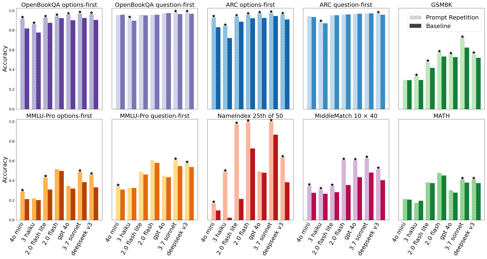
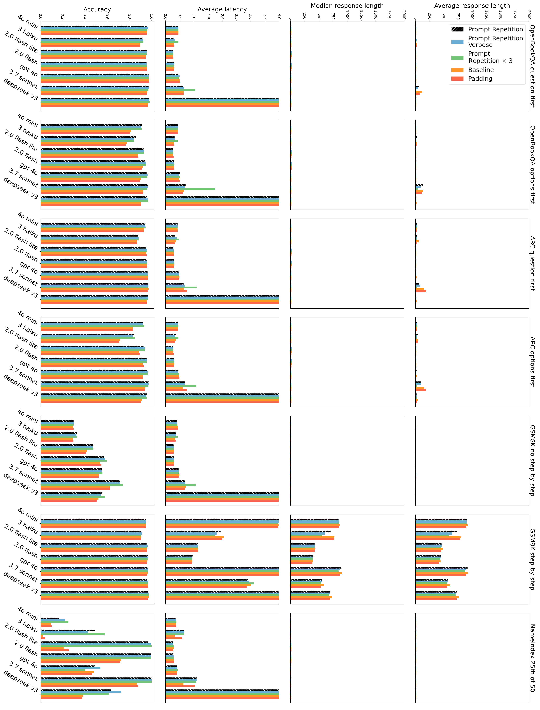
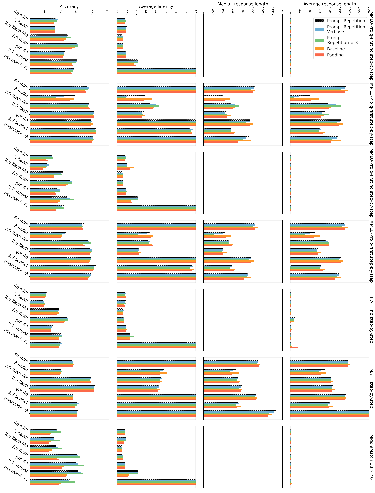
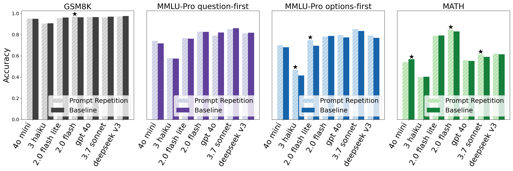

在不使用推理（reasoning）模式时，重复输入的 prompt 能提升主流模型（Gemini、GPT、Claude、Deepseek）的表现，且不会增加生成的 token 数量或延迟。
LLM 是 causal（因果）语言模型 —— 过去的 token 无法关注到未来的 token。这意味着在 "<CONTEXT> <QUESTION>" 这种格式中，context 部分的 token 在编码时还"不知道"后面的 question 是什么。
<QUERY>" 变成 "<QUERY><QUERY>"（即重复一遍）。进一步的观察：经过 RL 训练的推理模型，已经自然地学会了重复（部分）用户请求的行为。Prompt Repetition 将这种"重复"从生成阶段移到了可并行的 prefill 阶段，因此不增加延迟。
测试模型（7 个）：
测试基准（7 个）：
Prompt 变体对比：
对多选题基准（ARC、OpenBookQA、MMLU-Pro），同时测试 question-first 和 options-first 两种排列。所有测试关闭推理模式，通过各模型官方 API 执行。

准确率提升：所有模型、所有基准上的准确率均有提升或持平。在自定义任务 NameIndex 和 MiddleMatch 上提升尤为明显（如 Gemini 2.0 Flash Lite 在 NameIndex 上从 21.33% 提升到 97.33%）。
不增加输出长度和延迟：


推理模式下效果中性：开启推理（step-by-step thinking）时，prompt repetition 效果基本中性（5 胜 1 负 22 平），符合预期——推理模型已自带类似的重复机制。

Padding 对照：用句号填充到同等长度时，不会带来提升，证明收益来自语义重复，而非输入变长。
Repetition ×3：在部分任务上（特别是 NameIndex 和 MiddleMatch）显著超越单次重复，值得进一步研究。